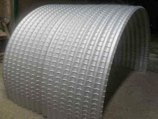
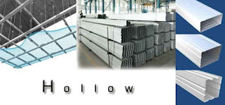

Jual Genteng Metal di Kupang ☎ 0822 4582 0777 (Rinanti)
Ini membuktikan bahwa atap adalah kebutuhan primer setiap bangunan. Salah satu atap yang paling laris di pasaran adalah atap yang terbuat dari galvalum. Pada kesempatan kali ini saya akan membahas beberapa jenis atap, seperti atap galvalum, atap lengkung, seng gelombang, plat seng & plat galvalum dan masih banyak lagi. Keberadaannya tidak kalah penting, dikarenakan fungsinya adalah menyangga. Apa yang terjadi? Tentu anda tahu, atap tersebut tidak akan bertahan lama dan bahkan bisa langsung roboh karena tidak adanya pondasi yang menyangganya.
Distributor & Supplier Genteng Metal

Kami adalah distributor genteng metal Kupang, tersedia berbagai ukuran dan varian genteng metal Kupang. Penggunaan genteng metal Kupang memiliki kelebihan seperti tidak adanya biaya perawatan karena genteng tidak akan berkarat, jamur ataupun pecah. Selain itu genteng metal Kupang dinilai lebih anti bocor. Genteng metal pasir adalah genteng yang memiliki bobot yang ringan tetapi memilki kekuatan yang tinggi sehingga genteng metal Kupang pasir adalah genteng yang memilki kualitas yang terbaik dibandingkan dengan genteng metal Kupang lainnya. Anda cukup menghubungi contact person yang sudah tertera di setiap industri yang anda butuhkan. Apakah anda sedang mencari genteng metal Kupang berkualitas? Maka anda berada di tempat yang tepat, silakan kunjungi dis.or.id dan dapatkan info menarik khusus untuk anda yang ingin segera mengetahui keunggulan genteng metal Kupang ini.
Silahkan hubungi kami untuk informasi lebih lanjut. Karena kepuasan dan kepercayaan pelanggan adalah segalanya bagi kami.
Info Pemesanan Selengkapnya
Google Maps: https://www.google.com/maps/d/u/0/viewer?mid=18K_Vf8GKnjN9AtE2jUMATDSYvScojDst&ll=-7.269373870070218%2C112.655575&z=16
Note: https://www.facebook.com/notes/distributor-of-industrial-supply/pabrik-supplier-genteng-metal/1783191985314014/
Event: https://www.facebook.com/events/1480458558737554/
Portfolio Produk: https://www.facebook.com/pg/DistributorOfIndustrialSupplyDIS/photos/?tab=album&album_id=1683750531924827
Distributor & Supplier Besi Beton

Karena perkembangan suatu proses pembangunan maka hasil bola material yang dapat mendukung pembangunan tersebut agar terlihat lebih kokoh dan juga awet. Anda bisa mendapatkan jenis beton berkualitas dengan membeli di berbagai tempat namun tak semua tempat memberikan kualitas besi yang terbaik. Pengaplikasian besi beton pada suatu bangunan kini telah banyak digunakan karena banyak keunggulan yang diberikan oleh Besi beton.
Segera kunjungi dis.or.id untuk mendapatkan besi beton yang anda inginkan. Anda bisa langsung mengunjungi dis.or.id. Kualitas dan mutunya pun telah terjamin. Jadi, anda tidak perlu ragu lagi.
Distributor & Supplier Steel Grating

Grating merupakan jenis baja yang bisa dibentuk kotak-kotak ataupun bilah yang antar bagiannya saling membentuk hubungan. Plat Grating tersebut dibuat dari jenis baja dengan kualitas yang tinggi kemudian dilas antara satu dengan yang lain. Untuk permukaan atas bagian kiri didesain bergerigi agar tidak membahayakan Anda. Grating ini disusun dari baja berkalit dan dilas di bagian permukaan silangnya. Dengan mencaro steel grating kualitas terbaik, pastinya kualitas bangunan yang anda bangun akan lebih kokoh dan tahan terhadap berbagai cuaca. Grating banyak digunakan dalam pembangunan lantai seperti deck, pabrik, tangga, industri, minyak, pertambangan, dan masih banyak lagi. Pada umumnya, Grating hanya memiliki 2 type, yaitu serrated atau bergerigi dan plain atau polos.
Anda bisa mendapatkan steel grating berkualitas dengan mengungjungi dis.or.id. Disana anda bisa mendapatkan steel grating dengan berbagai ukuran tertentu dengan harga yang sangat terjangkau namun berkualitas dan bermutu tinggi.
Distributor & Supplier Pipa (Hitam/Gas, Galvanis)

Apa bedanya pipa hitam gas dibanding dengan jenis pipa biasa? Perbedaan antara kedua pipa ini bisa anda lihat langsung pada pengaplikasiannya. Setiap konstruksi bangunan pasti akan memanfaatkan jenis pipa hitam karena ia sangat kokoh, bahkan bagian luarnya telah terlapis oleh stainless steel sehingga menjadikannya tahan korosi. Terlihat dari namanya saja, pipa hitam ini memang dibuat khusus untuk kebutuhan pertambangan minyak gas, untuk itu nama lain dari pipa hitam adalah pipa gas. Anda bisa memesan pipa hitam ini dari ukuran ½ inci sampai 40 inci.
Distributor & Supplier Kawat Bronjong/Gabion

Kawat bronjong kini dapat sering ditemui untuk berbagai kebutuhan pembanguna. Ini seperti halnya kawat lainnya. Gunanya agar kawat tidak karat. Hanya saja, karena ini berfungsi untuk mencegah erosi, maka kualitas kawat berbeda dengan kawat yang sering digunakan. Namun, banyak yang tidak tahu jika ternyata kawat bronjong ini juga digunakan sebagai pelabis tiang penyangga jembatan. Maka dari itu, kekuatannya untuk menahan tebing tinggi yang mungkin bisa longsor tidak perlu dipertanyakan lagi.
Jika anda saat ini sedang membutuhkan kawat bronjong, anda bisa langsunng mengunjungi dis.or.id. Disana anda bisa mendapatka kawat dengan harga yang cukup terjangkau dengan kualitas terbaik yang dimilikinya. Tak hanya itu, kawat bronjong yang disediakn juga terdapat bermacam ukuran.
Distributor & Supplier WF H-beam

Besi WF kini banyak dikenal sebagai salah satu jenis profil baja Struktural yang berkualitas. jenis besi WF banyak dimanfaatkan sebagai konstruksi baja. Dari sisi kekuatan, jenis besi ini tergolong padat dan kuat selipun di tekan dan di tarik. Di samping itu, kepadatan yang tinggi juga dimiliki oleh besi jenis ini sehingga kualitasnya memang benar-benar terjamin. Di samping itu, besi ini juga mempunyai sisi padat yang bagus.
Pembawaan bebannya pun juga sangat mudah dan terjamin.
Besi Wf berkualitas tinggi bisa anda dapatkan dengan sangat mudah di dis.or.id. Ada baiknya anda langsung mengunjungi dis.or.id. Segera kunjungi situs tersebut dan dapatkan penawaran menarik.
Distributor & Supplier Expanded Metal

Expanded metal ini merupakan lembaran baja yang berbentuk jala yang memiliki lubang-lubang yang homogen serta sangat pas jika dimanfaatkan untuk berbagai aplikasi selain pagar BRC.
Kini anda bisa membeli expanded metal yang anda inginkan dengan mengunjungi dis.or.id. Terdapat berbagai ukuran dari expanded metal yang bisa anda pilih dan anda pesan sekarang juga.
Distributor & Supplier Plat (Hitam, Kapal, Bordes, Strip)

Apabila anda saat ini sedang mencari tempat atau toko yang jual plat hitam , anda dapat menemukannya di toko besi terdekat. Plat besi bordes juga dikenal dengan checkered plate. Dis.or.id menjual plat besi yang anda butuhkan dengan harga yang murah. Plat besi bordes ini saat ini lebih banyak digunakan sebagai bahan pembuatan mobil, terutama mobil pengangkut seperti truk, pick up, dan lain sebagai nya.
Oleh Karena itu dis.or.id dapat menjual plat besi yang murah dengan kualitas yang bagus. Kualitas yang diberikan sudah terjamin dan bisa anda buktikan sendiri.
Distributor & Supplier Floor Deck (Bondex)

Anda yang punya rencana pembangunan dan membutuhkan material untuk pengecoran lantai mungkin bisa menggunakan floor deck. Floor deck atau yang biasa disebut bondek adalah material yang berfungsi sebagai penyangga lantai cor. Floor deck merupakan material yang tahan terhadapa api di bandingkan dengan material kayu lainnya. Pemakaian dari floor deck juga bisa membuat proses pengerjaan dan pembuatan dak menjadi lebih mudah, cepat dan efisien.
Floor deck berkualitas tinggi bisa anda dapatkan dengan mudah yaitu mengunjungi situs dis.or.id. Anda juga bisa langsung memesannya ataupun hanya ingin mengetahui detail harga yang di patok dari floor deck tersesbut.
Distributor & Supplier Atap Galvalum

Saat ini bangunan modern minimalis dan properti sudah sering dijumpai menggunakan atap galvalum.
Ada yang menjual per m2 tapi ada pula yang menjual dengan sistem lembaran. Selain memberikan banyak keuntungan, kesan pada rumah anda juga akan terlihat modern. Galvalum mempunyai berbagai ukuran yang sesuai dengan kebutuhan.
Galvalum sendiri mempunyai banyak kelebihan diantaranya adalah anti panas. Bahannya yang terkomposisi dengan baik membuatnya tidak berisik bahkan ketika hujan, tahan lama dan anti karat. Jenisnya yang beragam dan banyak ukuran yang dapat disesuaikan mampu memenuhi kebutuhan anda. Perbedaan ukurannya terletak pada panjang, lebar dan tebalnya.
Distributor & Supplier Atap Lengkung

Selain berfungsi sebagai atap sebuah bangunan baik itu rumah, kantor maupun stadion. Tidak terkecuali gudang, halte, maupun peneduh bagi kendaraan. Terkadang atap lengkung ini juga sangat berguna bila dipakai dengan hal demikian.
Sifat fleksibelnya dan modelnya yang unik membuatnya dapat dijadikan atap berbagai bangunan. Bahan penutup atap haruslah dari bahan yang kuat menahan berbagai macam kondisi cuaca.
Maka sudah pasti bahwa kualitas atap tersebut sangat diragukan. Bila anda tertarik untuk mempunyai atap lengkung pada bangunan anda maka janganlah ragu. Maka anda akan mendapatkan penawaran dengan harga terjangkau. Kami menyediakan atap lengkung sesuai dengan keinginan anda. Kunjungi dis.or.id dan kami akan siap membantu kebutuhan anda.
Distributor & Supplier Truss Canal C

Salah satu besi yang tidak kenal musim dan telah banyak menggantikan dan menggeser fungsi kayu sebagai pembangunan rumah anda. Besi kanal C sebutan untuk besi yang satu ini. Besi kanal C ini lebih banyak di pakai untuk atap sebuah rumah, terutama dalam membangun rangka atap nya. Besi kanal C bisa menjadi pilihan yang tepat bila anda ingin membangun rumah minimalis dengan desain modern. Pilihan ini amatlah tepat mengingat bahwa besi ini sangat melengkapi kekurangan dalam pembangunan rumah minimalis tersebut. Mencari kanal c galvalum berkualitas dengan harga murah? Maka dis.or.id adalah jawaban tepat untuk anda.
Distributor & Supplier Hollow Galvalum

Seperti yang telah saya tuliskan di beberapa artikel, salah satu fungsi dari Hollow Galvalum adalah sebagai rangka plafon atap rumah. Sederhananya, adalah pondasi atap yang tentunya diperlukan tepat dibawah pemasangan atap. Jika pada jaman sebelum nya banyak orang menggunakan kayu, sekarang sudah mulai beralih ke pilihan yang lebih cerdas, yaitu menggunakan besi baja berjenis hollow.
Karena hollow galvalum ini dapat ditemukan di toko bangunan khusus yang keberadaannya juga sudah menjamur. Rumah rumah masa kini, sudah banyak yang menggunakan rangka jenis hollow untuk pembuatan plafonnya. Sehingga tidak heran bila hollow galvalum menjadi produk paling dicari oleh masyarakat dalam industri pembangunan. Kami menjual Hollow galvalum berkualitas, anti korosi, dan juga jaminan tahan lama. Disana sudah banyak info mengenai hollow galvalum, dari mulai ukuran, harga, berat dsb. Oleh karena itu dibawah ini saya akan berbagi sedikit tips tentang cara pasang rangka plafon hollow. Tunggu apa lagi, silahkan hubungi customer service kami untuk melakukan pemesanan hollow galvalum.
Distributor & Supplier Seng Gelombang

Seng gelombang memiliki banyak keunggulan dari berbagai sisi. Ia lebih mudah di pasang dan harga jual yang ekonomis dipasaran membuat seng gelombang memiliki banyak peminat. Daya tahannya pun terhadap cuaca jadi lebih kuat dari seng gelombang sebelumnya. Seng gelombang sekarang ini diburu banyak masyarakat untuk menutup bagian atap bangunan mereka. Ia lebih mudah di pasang dan harga jual yang ekonomis dipasaran membuat seng gelombang memiliki banyak peminat. Meskipun begitu, nyatanya seng gelombang memiliki kekurangan yakni ia lebih cepat menyerap panas.
Jika anda membutuhkan seng gelombang kecil ini sekarang juga, maka segera hubungi kami di dis.or.id untuk kepentingan lebih lanjut. Seng gelombang dengan warna ataupun transparan amatlah awet bila dibandingkan dengan bahan pembuat atap lainnya.
Distributor & Supplier Plat Seng

Harga plat galvanis lembaran akan lebih mahal dibandingkan dengan harga per meter.
Hal ini tidak lain dikarenakan plat galvanis lembaran memiliki ukuran yang lebih luas dan bermeter meter. Bagaimana perihal harganya? Bila anda bandingkan maka jarak harga plat galvanis 3mm akan berbeda jauh dengan 1mm, tentu hal ini wajar karena salah satu penentu harga dari sebuah plat adalah ukuran ketebalannya. Namun jika anda hanya sekedar menggunakan nya untuk kebutuhan renovasi (dalam jumlah yang sedikit) anda dapat membeli yang per meter. Harga yang kami tawarkan untuk anda adalah yang termurah, karena kami adalah distributor resmi dan langsung dari pabrik.
Disana banyak sekali info yang sangat berguna untuk anda yang sedang mencari plat seng & plat galvalum sesuai kebutuhan anda. Lalu berapa harga plat galvanis 2018? Bila anda sedang mencari harga terbaru hari ini juga, anda dapat menghubungi kami karena kami menjual plat galvanis, galvalum dengan berbagai ketebalan dan ukuran.
Distributor & Supplier Besi Wiremesh

Besi lonjor yang disusun rapi hingga membentuk anyaman adalah besi wiremesh. Besi wiremesh sering di anggap banyak orang adalah besi anyam karena strukturnya yang mirip dengan anyaman. Untuk kepentingan konstruksi, besi wiremesh diaplikasikan untuk keperluan anak tangga, plat lantai, dan penguat dak beton. Tentu saja, tidak semua kebutuhan besi wiremesh bisa menggunakan jenis yang sama. Untuk ketebalan besi wiremesh 8 – 10 adalah peruntukkan untuk bangunan bertingkat. Jika anda membutuhkan besi ini, segera hubungi kami dikontak yang tersedia.
Distributor & Supplier Pagar BRC

Pagar BRC dibuat dari besi beton berukuran diameter 5 mm – 8 mm sehingga tergolong kuat sebagai pagar pengaman. Potongan besi tersebut kemudian digabungkan dengan bantuan mesin las wiremesh. Pagar BRC termasuk pada kategori pagar minimalis yang siap pakai. Apalagi mengingat kekuatan pagar BRC tidak dapat diragukan lagi, karena pagar ini diproduksi dengan baja bertegangan tinggi U55 grade dengan tegangan ijin 2900kg/cm2 sekitar 2. 5 kali dari kekuatan besi biasa. Jika Anda membutuhkan pagar BRC ini segera kunjungi situs resmi kami untuk informasi lebih detail. Bagi anda yang membutuhkan pagar BRC anda dapat menghubungi kami untuk informasi pemesanan.
Distributor & Supplier Kawat Loket, Kawat Harmonika

Apakah anda membutuhkan kawat untuk penyekat? Kawat pagar? Penutup jendela? Atau kebutuhan lainnya? Untuk kebutuhan seperti ini anda bisa gunakan kawat loket harmonika yang memiliki bentuk seperti anyaman dan kuat. Jika dilihat dalam kehidupan sehari-hari kawat harmonika banyak diaplikasikan untuk kebutuhan industri, konstruksi, rumahan, dan lainnya. Kami menyediakan kawat harmonika dengan berbagai ukuran, tersedia ukuran kawat dengan diameter 1,5 mm sampai 4 mm dan ukuran lubang 20 mm sampai 70 mm. Untuk informasi selengkapnya, anda dapat menghubungi kami, terlah tersedia kawat loket harmonika dengan diameter 1,5 mm – 4 mm, disertai lubang 20 mm sampai 70 mm tergantung dengan kebutuhan anda.
Distributor & Supplier CNP & UNP

Besi UNP sebenarnya memiliki spesifikasi yang hampir sama dengan wide flange, hanya saja besi UNP mudah menekuk sehingga sangat jarang digunakan sebagai kolom bangunan. Bagi anda yang berminat menggunakan besi CNP tentu sangat bersyukur, karena besi ini sangat fleksibel dan ia bisa dimodifikasi dari plat koil dengan teknik cutting. Selain untuk material konstruksi bangunan, besi CNP juga bermanfaat untuk industri otomotif.
Distributor & Supplier Besi Siku

Pastinya anda sudah mengenal material besi siku ini dengan baik, dengan ciri khasnya sebagai besi penyangga banyak sekali manfaat yang diberikan olehnya. Besi siku menjadi salah satu material yang dapat diandalkan sebagai besi penyangga. Bentuk dari besi siku sendiri adalah membentuk dua sisi tegak yang lurus, untuk sudut berhadapannya sendiri tergantung dengan spesifikasi kebutuhan anda. Untuk panjangnya, pada umumnya besi siku dibuat dengan ukuran 6 meter dan ketebalan lebar yang berbeda-beda. Anda dapat manfaatkan produk besi siku dari perusahaan kami untuk keperluan industi, otomotif, bangunan, furnitur, konstruksi dan sebagainya. Kunjungi website kami di www.dis.or.id atau menghubungi kontak yang tersedia.
Distributor & Supplier Hollow (Hitam, Galvanil, Galvanis)

Besi hollow banyak sekali dimanfaatkan untuk kebutuhan proyek bangunan karena kualitasnya yang lebih kuat dibanding kayu. Dengan menggunakan material ini pembangunan konstruksi juga bisa selesai lebih cepat sehingga meminimalkan upah pekerja. Jika saat ini anda membutuhkan besi hollow, anda dapat menghubungi kontak yang telah tersedia atau kunjungi saja website resmi kami di dis.or.id. Kami telah menyediakan besi hollow hitam galvanil galvanis yang bisa anda pesan langsung. Apabila anda membutuhkan material hollow hitam, kami dapat melayani kebutuhan anda tersebut dengan berbagai spesifikasi ukuran. Kami pun merupakan distributor relasi dari dis.or.id yang menawarkan produk hollow hitam galvanil galvanis dengan kualitas terbaik dan harga yang murah. Terdapat besi hollow dengan berbagai ukuran yang bisa anda pesan langsung, misalnya: ukuran besi hollow 40 x 40 x 2 mm x 6 Meter, 50 x 50 x 3 mm x 6 meter hingga ukuran 150 x 150 x 5 mm x 6 meter.Segera hubungi kontak kami untuk info lebih lanjut. anda dapat memesan besi hollow hitam galvanil galvanis tersebut dengan berbagai ukuran, baik ukuran besi hollow 40 x 40 x 2 mm x 6 Meter, 50 x 50 x 3 mm x 6 meter sampai dengan ukuran 150 x 150 x 5 mm x 6 meter. Kami menyediakan besi hollow hitam dengan ukuran 40, 50, 150 dan lain sebagainya dengan panjang rata-rata 6 meter. Untuk anda yang membutuhkan besi ini, kami menyediakan ukuran besi hollow yang variatif 40 x 40 x 2 mm x 6 Meter, 50 x 50 x 3 mm x 6 meterr sampai dengan ukuran 150 x 150 x 5 mm x 6 meter. Jika anda membutuhkan besi hollow maka sebelum memesan pada kami anda harus melakukan perhitungan kebutuhan dahulu, seperti berapa panjang dan ketebalan yang diperlukan.
Distributor & Supplier Pipa Pancang

Pipa pancang yang memiliki fungsi cukup penting dalam sebauh proyek tentu saja tersedia di sini. Apalagi dengan fungsinya yang semakin memudahkan pemasangan. Terutama bagi proyek berjalan yang sedang melakukan pembangunan di atas permukaan laut. Tidak dapat di pungkiri lagi, fungsi pipa pancang ini sangatlah penting. Sedangkan dalam pemesanannya, jangan khawatir karena banyak sekali penjual tiang pancang terpercaya yang bisa Anda temukan. apalagi jika yang di katakan adalah di industri DIS ini. apalagi mengingat banyaknya distributor yang melayani termasuk DIS. Sedangkan untuk kualitas pipa pun akan sangat terjamin dengan mutu terbaik. Terlebih jika mengingat berbagai kelebihan dan fungsi nya yang bisa di terapkan di mana-mana.
Jasa Pondasi Bor (Strouss/Borepile)

Dalam pembangunan rumah, tentu saja setiap orang menginginkan hasil terbaik sehingga bisa membuatnya puas, termasuk juga untuk pengeboran pondasi. Dalam hal ini, sekarang Anda tidak pelru khawatir karena ada banyak jasa yang melayani jasa pondasi bor. Bahkan di Indonesia ini pun juga telah tersebar di mana-mana. untuk masalah kualitas pun tidak perlu di pertanyakan lagi karena hasilnya akan sangat terjamin mengingat pelakunya adalah mereka yang sdah berpengalaman dan merupakan jasa profesional. Akan tetapi, perlu di ketahui pula kalau selama proses pengeboran tersebut akan ada suara bising yang cukup mengganggu sekalipun tidak menimbulkan getar. Dalam prosesnya, pengeboran ini akan menimbulkan suara bising karena mesinnya yang sedang bekerja. Namun bisa lebih mengurangi gangguan karena tidak menimbulkan getaran. sedangkan jika di lihat dari segi kualitas, sebenarnya kedua jenis ini sama-sama bagus.
Distributor & Supplier Genset (New/Second)

Sejauh ini, genset atau generator set uang sudah banyak di aplikasi kan dengan bahan bakarnya yang berupa solar tentu saja juga sudah cukup terkenal. Produk yang satu ini merupakan penghasil ternaga listrik yang dalam penggunaannya memanfaatkan bahan bakar berupa solar. Sedangkan untuk pembelian, memang ada genset yang masih dalam kondisi baru mapun genset yang sudah bekas atau second. Nah, untuk pembelian keduanya, bisa Anda dapatkan pula di DIS.
Dengan harga genset yang cukup tinggi, memang akan lebih ringan jika membeli genset yang sudah second. Hal ini pun menjadi sebab banyak yang lebih memilih pembelian genset yang bekas.
Distributor & Supplier UPS

Kalau menyebut UPS, mungkin akan banyak yang bertanya-tanya sebenarnya apa sih barang yang satu ini. Hanya saja, yang tidak mengetahui nya pu juga cukup banyak. Sebenarnya bisa di akui bahwa memiliki nya sangatlah penting. Terutama bagi yang sering menggunakan komputer. Sedangkan segi varian nya bisa jadi adalah kualitas UPS sendiri maupun kapasitas yang di miliki. Karenanya, ketika Anda membeli UPS ini, sebaiknya memastikan terlebih dahulu seberapa besar kapasitas yang Anda butuhkan.
Distributor & Supplier Forklift (Second)

Di berbagai industri, penggunaan forklif memang cukup banyak dengan fungsinya yang juga tidak kalah penting. Oleh karena itu, banyak penjualannya di mana-mana. Jika tidak ingin yang baru pun Anda bisa memilih forklif yang di jual bekas. Sedangkan dalam pembeliannya, bisa memilih baik yang baru ataupun yang bekas. Dengan jaminan kualitas yang memadai ini, bisa di pastikan segala aktifitas industri Anda akan berjalan lebih lancar lagi. selain itu memilikinya pun juga akan sangat menguntungkan karena ketika tidak terpakai maka Anda bisa menjualnya kembali. Jika sudah mengetahui kualitasnya yang terjamin tersebut, tentu saja segala aktifitas industri akan menjadi semakin mudah lagi. Sedangkan yang lebih menguntungkan lagi darinya adalah, ketika Anda sudah tidak memerlukannya, maka bisa di jal kembali pada distributor forklif.
Jasa Pembuatan Moulding Inject

Jasa tersebut akan selalu siap membantu Anda. Termasuk jika Anda sedang bingung akan ide, di sini pun ada beberapa pilihan yang bisa menjadi inspirasi. Selanjutnya, silahkan Anda sesuaikan pilihannya dengan kebutuhan yang sedang Anda cari.
Jasa Pembuatan Sparepart Mesin Produksi / Alat Berat

Di dunia mesin, tentu saja mendengan kata sparepart atau alat berat sudah tidak asing lagi. Oleh karena itu, Anda perlu memilih jasa terpercaya yang bisa di andalkan dalam pembuatan alat berat tersebut. Apalagi mengingat dukungan tenaga profesional yang di sediakan sehingga sparepart Anda akan lebih aman. Pembuatan alat berat ini memang tidak bisa sembarangan, bisa jadi ketikan di buat dengan sembarangan dan ada kesalahan yang cukup fatal, akan membahayakan bagi para pekerja. alasannya adalah, jika ada kesalahan yang cukup fatal, maka bisa jadi akan membahayakan pekerja yang sedang menggunakannya. sedangkan untuk jasa profesional di sini akan menghasilkan DIS dengan kualitas tinggi sehingga akan lebih aman lagi untuk di aplikasikan. Semakin baik spesifikasi nya, tentu akan semakin mahal. Jadi berapa harga dalam pembuatan setiap satuannya tergantung pada bagaimana spesifikasi yang di miliki.
Jasa Service Elektronik (Kompor Gas, Dispenser, Mesin Cuci)

Kini elektronik memang semakin banyak di gunakan di kalangan masyarakat. Oleh karena itu, sebagai penyeimbang, tidak heran pula jika jasa service elektronik yang melayani perbaikan seperti kompor gas, dispenser dan mesin cuci terus bermunculan. sedangkan beberapa jasa ini melayani service seperti kompor gas, dispenser maupun mesin cuci. Sedangkan untuk masalah kualitas yang di tawarkan DIS, jangan khawatir karena tingkat keamanan dan perbaikannya sangat tinggi dna terjamin. Selanjutnya, untuk masalah kualitas, tidak perlu di pertanyakan lagi karena DIS akan memberikan jasa yang memiliki perhitungan tingkat perbaikan dan keamanan yang tinggi. Nah, apa pun barang yang perlu di perbaiki, kini akan kembali berfungsi seperti semula. Selain untuk perbaikan, Anda pun bisa juga hanya melakukan pengecekan tanpa keluhan sebagaimana service pada umumnya. Hanya saja kebanyakan orang memang melakukan service elektronik saat ada keluhan yang di rasakan saja.
Banyak manfaat yang bisa didapatkan hanya dengan memasang atap sebagai peneduh bangunan anda. Tak terkecuali rumah dengan ukuran paling kecil sekalipun, pasti mempunyai atap sebagai komponen utama. Seperti yang saya jabarkan diatas fungsi atap sudah tidak terbantahkan dan tidak dapat digantikan lagi. Bila anda berkenan, maka anda dapat mengujungi situs utama kami dis.or.id.